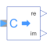

ComplexToRealConverts complex to Cartesian representation |

|
Information
This information is part of the Modelica Standard Library maintained by the Modelica Association.
Converts the Complex input u to the Real outputs re (real part) and im (imaginary part).
Parameters (1)
| useConjugateInput |
Value: false Type: Boolean Description: If true, input is processed conjugate complex |
|---|
Connectors (3)
| re |
Type: RealOutput |
|
|---|---|---|
| im |
Type: RealOutput |
|
| u |
Type: ComplexInput |
Used in Examples (3)
|
Modelica.ComplexBlocks.Examples
Test the conversion blocks |
|
|
Modelica.Electrical.QuasiStationary.MultiPhase.Examples |
|
|
Modelica.Magnetic.QuasiStatic.FundamentalWave.Examples.BasicMachines.SynchronousMachines
Test example: PermanentMagnetSynchronousMachine, investigating maximum torque per Amps |
Used in Components (2)
|
Modelica.Electrical.QuasiStationary.MultiPhase.Sensors
threephase Aron sensor for active power |
|
|
Modelica.Electrical.QuasiStationary.MultiPhase.Sensors
threephase sensor for reactive power |